library(CausalStructures)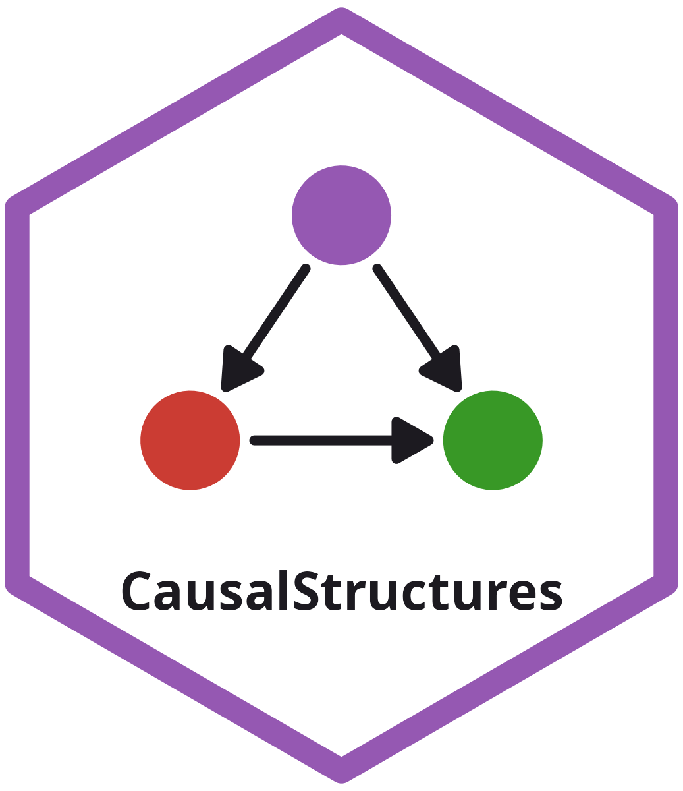
Plotting Causal Graphs
Source: vignettes/articles/plot.qmd
cgraph_plot() draws a cgraph with grid graphics. For node placement, you can use the layouts provided by Sugiyama.jl or NetworkLayout.jl1, or provide your own layout.
NoteGeneral-purpose by design
There are many conventions for drawing causal graphs. For example, you might box conditioned variables, dash latent variables, draw <-> as a dashed arc, or use different colors for exposures and outcomes.
cgraph_plot() does not impose any of these conventions by default. Instead, you can use the style functions, global defaults, and layouts to choose the conventions that make sense for your application2.
Basic usage
You can pass any cgraph to cgraph_plot(), and all edge marks are supported:
unknown <- cgraph("A <-> B o-> C o-- A", class = "UNKNOWN")
cgraph_plot(unknown)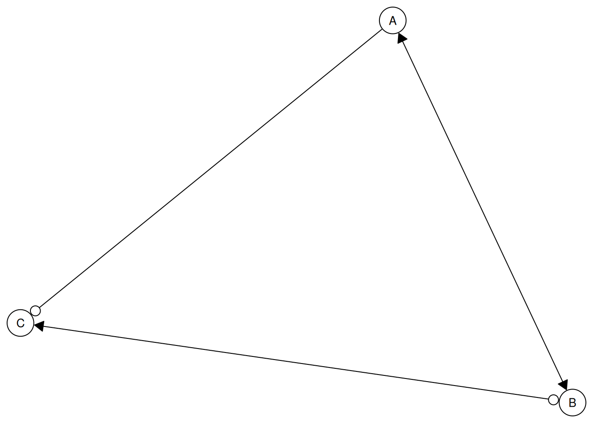
As an example, here is the DAG from Figure 6.5 of Peters, Janzing and Schölkopf (2017):
dag <- cgraph(
"C --> X, A --> X + K, X --> F + D, K --> Y, D --> Y + G, Y --> H"
)
cgraph_plot(dag)
cgraph_plot() returns a cgraph_plot object, which is drawn when it is printed. At the console that happens automatically; inside a function or loop, call print() on it. plot(dag) is a shortcut that builds the plot and draws it right away.
Styling a plot
Before a plot is drawn, you can add styling to it step by step, chained with |>:
cgraph_plot(dag) |>
style_edges(col = "gray60") |>
style_nodes(fill = "lightskyblue", nodes = "Y") |>
style_edges(col = "#DC143C", lwd = 2, from = "K", to = "Y")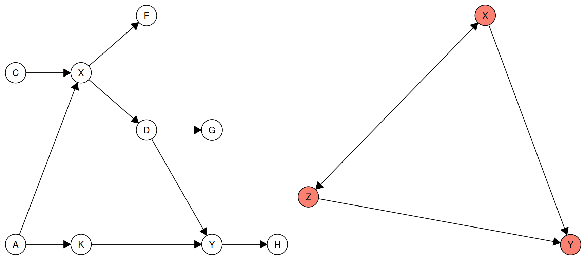
There are five style functions:
-
style_nodes()styles the nodes innodes. -
style_edges()styles the edges joining a node infromto a node into, optionally of a giventype. -
style_labels()styles the node labels innodes, andlabel_nodes()sets their text. -
style_title()styles the title.
Each call styles only the nodes or edges it selects; leaving out a selector selects everything. If two calls set the same field, the later one wins, so you can start with a style for all edges, as above, and then single some out.
Since the selectors are node sets, you can pass the results of query functions straight in. For example, to highlight the parents of Y and dash the edges into it:
cgraph_plot(dag) |>
style_nodes(fill = "lightskyblue", nodes = parents(dag, "Y")) |>
style_edges(lty = "dashed", to = "Y", type = "-->")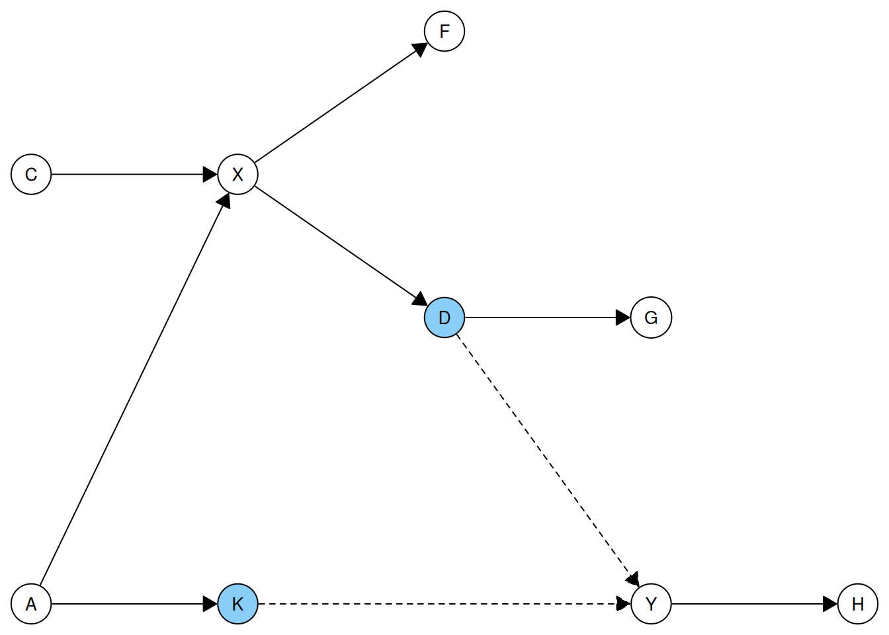
A style function also accepts a graph directly, starting the plot with the default layout, so dag |> style_nodes(fill = "gold") works too.
If you want to set defaults for an entire project, you can use plot_options(), with a list of fields for each of node_style, edge_style, label_style and title_style. The style functions still take precedence, and plot_options(plot_default_options()) resets to the built-in defaults:
plot_options(node_style = list(fill = "lightblue"), edge_style = list(lwd = 2))cgraph_grob() gives the grid grob of a plot, if you want to draw it yourself with grid::grid.draw(), for example in a viewport of a larger figure.
Layout
The layout argument controls where the nodes are placed. It defaults to "sugiyama" for a DAG, and to "stress" otherwise.
cgraph_plot(dag, layout = "stress")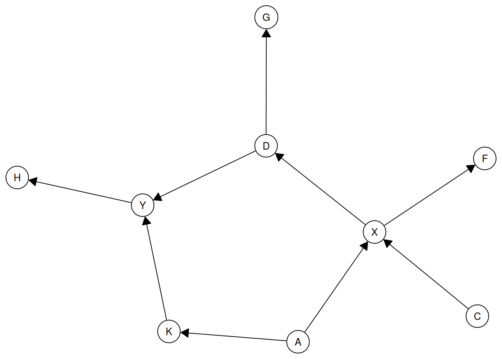
You can use these names for the built-in layouts. "sugiyama" comes from Sugiyama.jl, while the others come from NetworkLayout.jl, as in CausalStructures.jl; see ?cgraph_layout for details:
layout |
Algorithm |
|---|---|
"sugiyama" |
Sugiyama (layered) layout |
"stress" |
Stress majorization |
"spring" |
Fruchterman-Reingold force-directed |
"sfdp" |
Scalable force-directed placement |
"spectral" |
Spectral layout |
"shell" |
Nodes evenly spaced on a circle |
"squaregrid" |
Square grid |
"stress", "spring" and "sfdp" start from random positions; seed (default 1) makes them reproducible.
For "sugiyama", direction ("right", the default, "down", "up", or "left") sets which way the layers flow:
cgraph_plot(dag, direction = "down")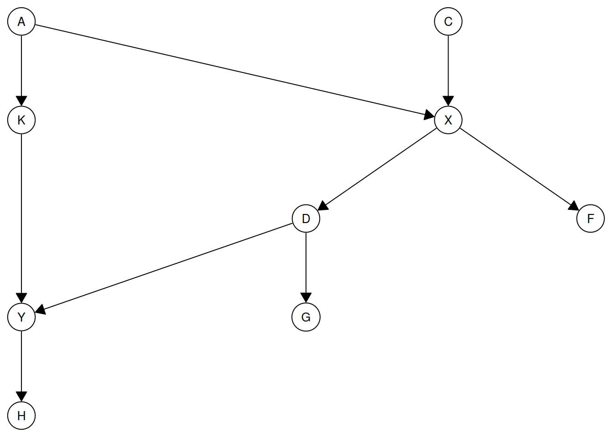
If you want to place the nodes yourself, you can pass explicit positions instead of a name. You can either use a named list of c(x, y) pairs keyed by node name, or a data.frame with name, x, and y columns:
cgraph_plot(
dag,
layout = list(
A = c(0, 1),
C = c(0, -1),
K = c(1, 1),
X = c(1, -1),
D = c(2, -1),
F = c(2, -2),
Y = c(3, 0),
G = c(3, 1),
H = c(4, 0)
)
)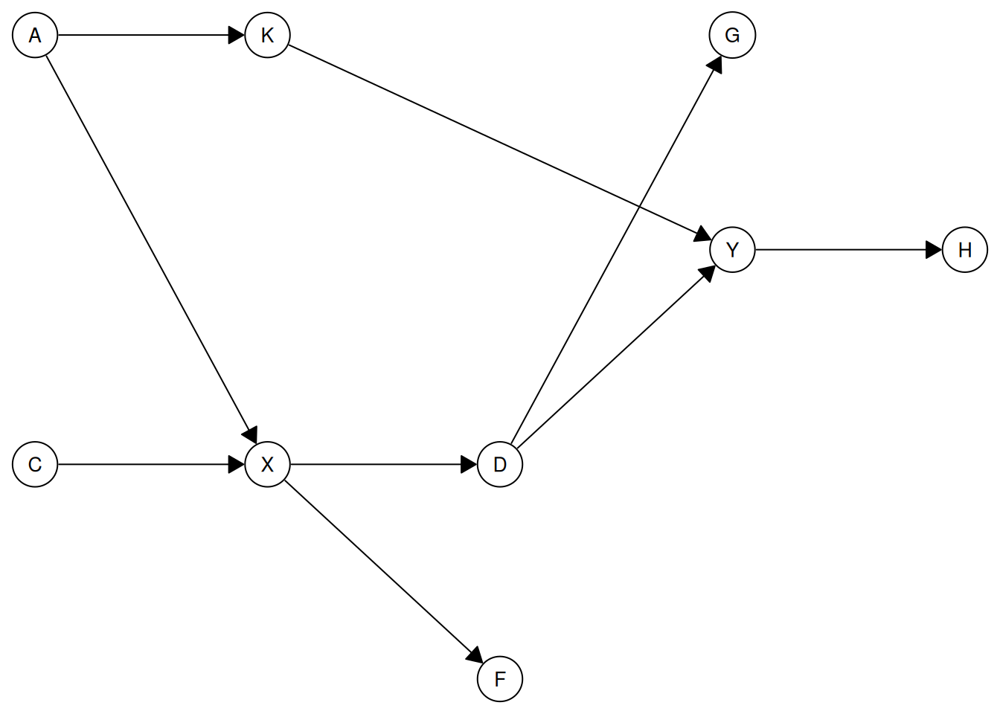
TipTweaking a layout by hand
You can compute a starting layout using cgraph_layout(), and then manually adjust a few nodes:
positions <- cgraph_layout(dag, method = "stress")
positions[positions$name == "G", c("x", "y")] <- c(1, 1.5)
cgraph_plot(dag, layout = positions)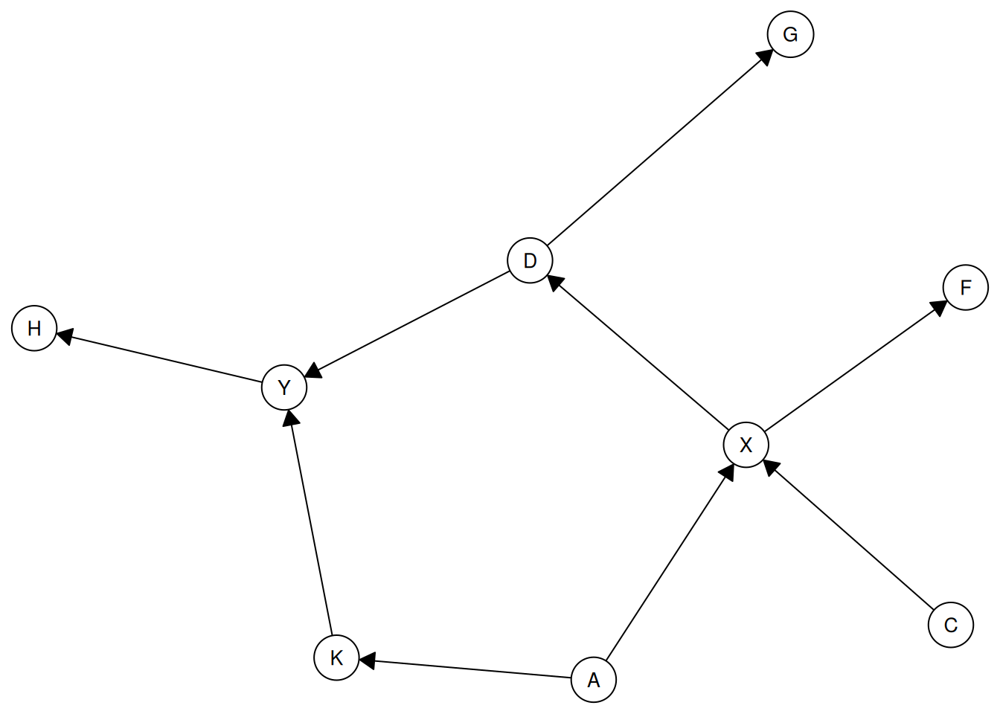
TipSugiyama positions without Sugiyama routing
Sugiyama.jl implements its own routing using dummy nodes. If you prefer the automatic Bezier-curve routing used otherwise, you can compute the Sugiyama positions with cgraph_layout() and pass those instead:
dag_layered <- cgraph("A --> X, A --> B, X --> Y, B --> Y, A --> Y")
cgraph_plot(dag_layered, layout = cgraph_layout(dag_layered, "sugiyama"))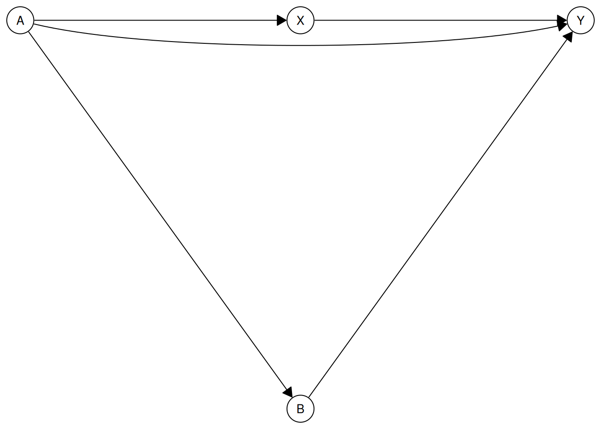
Styling nodes
style_nodes() takes these fields:
| Field | Default | Controls |
|---|---|---|
fill |
"white" |
fill color |
col |
"black" |
border color |
lwd |
1 |
border line width |
linestyle |
solid | border line style (any lty) |
shape |
"circle" |
node outline shape |
radius |
NULL (text-fit) |
size of each node (mm) |
padding |
2 |
clearance (mm) around each label when radius is NULL
|
size |
1 |
multiplier on the computed node size |
Combine color, border, and shape to highlight a node:
cgraph_plot(dag) |>
style_nodes(fill = "lightblue", col = "navy") |>
style_nodes(fill = "salmon", col = "#DC143C", nodes = "A") |>
style_nodes(shape = "square", nodes = "K")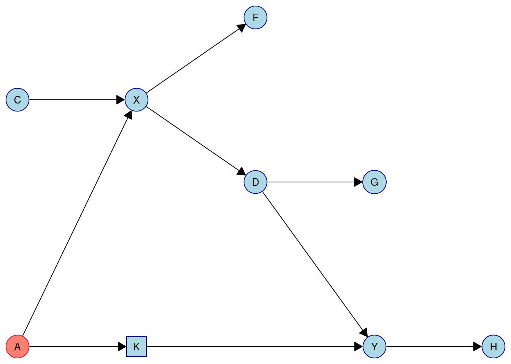
You can set shape to "circle" (the default), "square", "ellipse", or "rect". The latter two are mainly useful when you want to fit an oblong label. You can also use linestyle to style the border, for example to mark a latent variable:
dag |> style_nodes(linestyle = "dashed", col = "gray50", nodes = "X")If you only want to draw the node names, you can make the fill and the border transparent. Edges still stop at the (now invisible) node boundary, so you can use "rect" with a smaller padding to bring the arrowheads closer to the text:
dag |>
style_nodes(
fill = "transparent",
col = "transparent",
shape = "rect",
padding = 1
)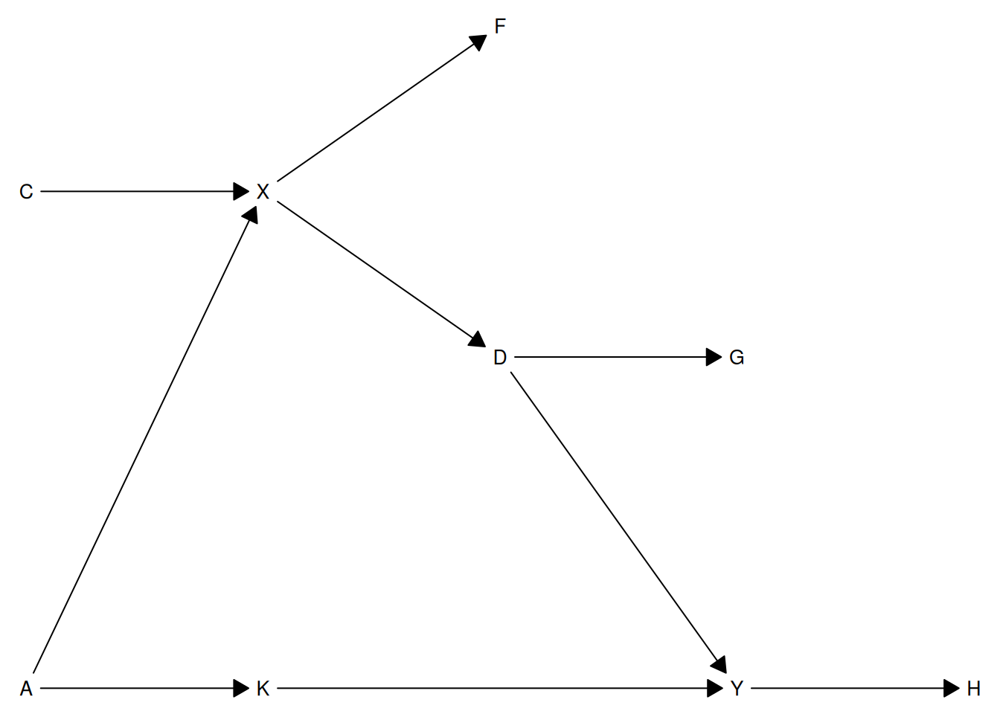
Text-fit node sizing
By default (radius = NULL), nodes are sized to fit their labels:
longlabels <- cgraph("Exposure --> Mediator --> Y_outcome")
longlabels |> style_nodes(shape = "ellipse", nodes = "Exposure")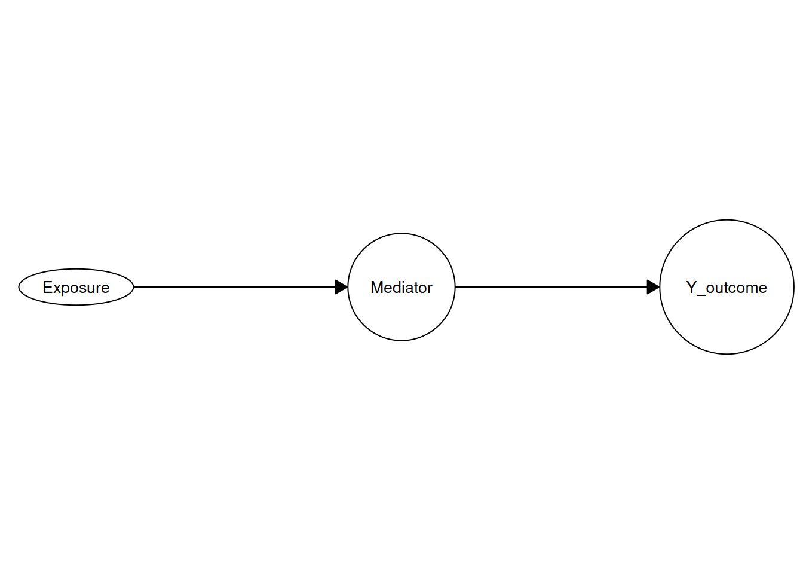
If you want to control the size yourself, you can set radius explicitly:
dag |> style_nodes(radius = 6)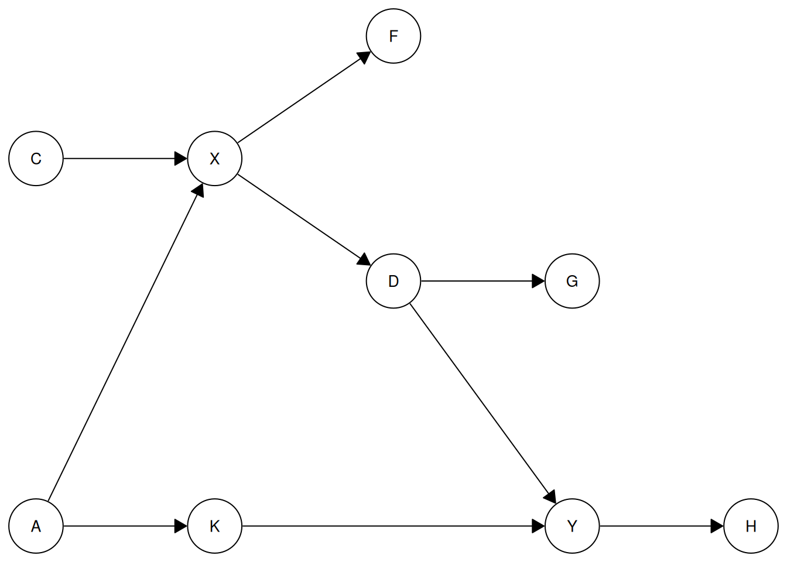
Styling edges
style_edges() selects the edges joining a node in from to a node in to, in either direction. type keeps only the edges with the given notation, read from from to to, so it also fixes the direction:
| Call | Styles |
|---|---|
style_edges(p, ...) |
every edge |
style_edges(p, ..., from = "X") |
every edge touching X
|
style_edges(p, ..., from = "X", type = "-->") |
the edges out of X
|
style_edges(p, ..., to = "X", type = "-->") |
the edges into X
|
style_edges(p, ..., from = "A", to = "X") |
the edges between A and X
|
style_edges(p, ..., type = "<->") |
every bidirected edge |
The notations are "-->", "<--", "---", "<->", "o->", "<-o", "o--", "--o", and "o-o". style_edges() takes these fields:
| Field | Default | Controls |
|---|---|---|
col |
"black" |
line / marker color |
fill |
NULL (the edge’s col) |
arrowhead fill color |
lwd |
1 |
line width |
lty |
solid | line style |
gap |
0 |
gap (mm) at edge ends |
curvature |
NULL |
how far the edge bows |
path |
NULL |
explicit waypoints for an edge’s route |
arrow_size |
3 |
length (mm) of arrowhead triangles |
circle_size |
1.5 |
radius (mm) of open-circle (o) endpoints |
Let’s style some edges by type:
admg <- cgraph("X --> Y, X <-> Z, Z --> Y", class = "ADMG")
cgraph_plot(admg) |>
style_edges(col = "steelblue", type = "-->") |>
style_edges(col = "#DC143C", lwd = 2.5, type = "<->")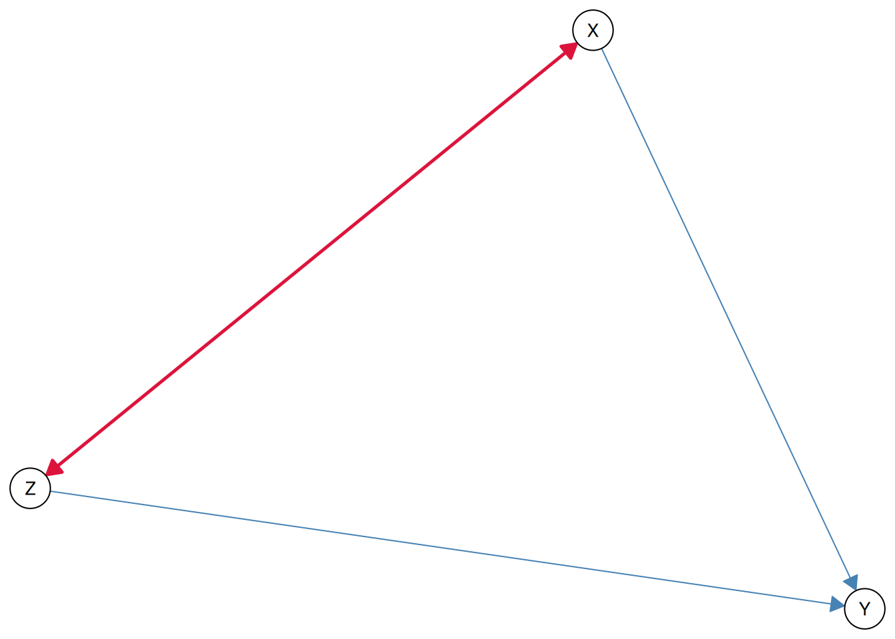
fill controls the arrowhead’s fill color. By default (NULL), it uses the edge’s resolved col, so arrowheads are solid. If you want hollow, outline-only arrowheads, pass NA:
dag |> style_edges(fill = NA)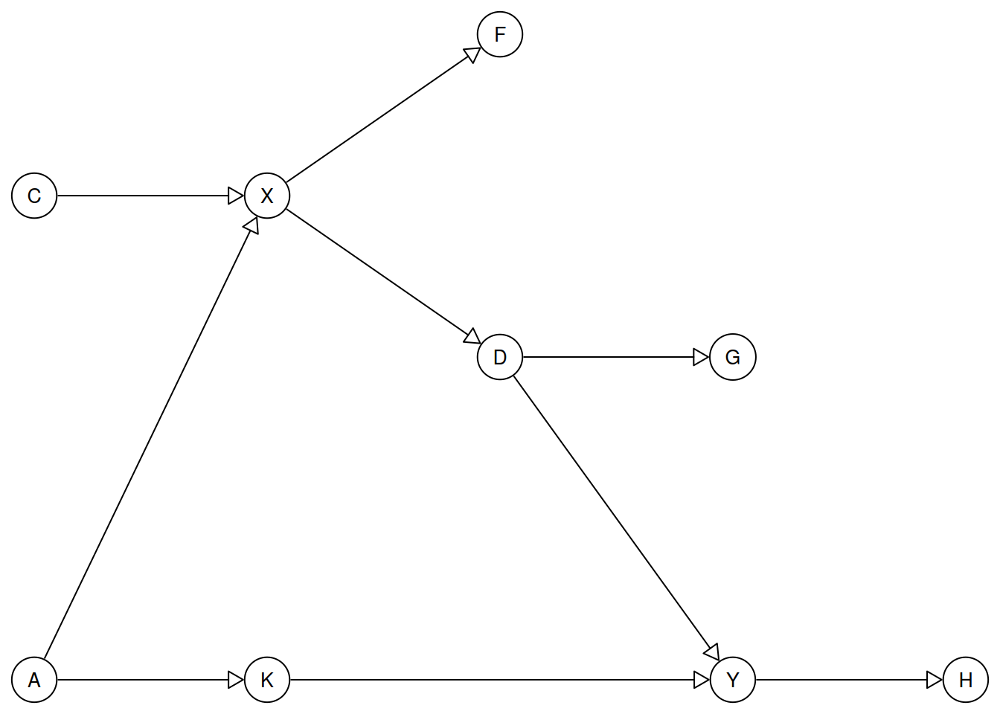
lty styles the edge line itself. For example, you can use it to dash <-> edges:
admg |> style_edges(lty = "dashed", type = "<->")If you prefer some space between each end of an edge and the node border, you can set gap:
dag |> style_edges(gap = 1)Parallel edges
If an ADMG has both X --> Y and X <-> Y, from = "X", to = "Y" selects both edges. If you need to distinguish them, add type:
shared <- cgraph("X --> Y, X <-> Y", class = "ADMG")
cgraph_plot(shared) |>
style_edges(col = "steelblue") |>
style_edges(col = "#DC143C", from = "X", to = "Y", type = "<->")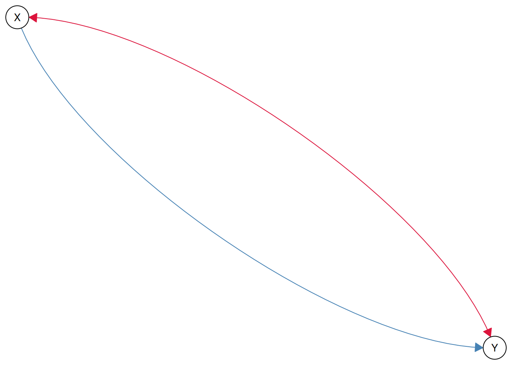
Notice that the two edges between X and Y are automatically curved apart, so they don’t overlap.
Curvature and automatic routing
curvature bows an edge into an arc instead of drawing it straight. Positive values bow the edge to the left when travelling from its first node to its second (as listed by edges()), while negative values bow it to the right.
admg |> style_edges(curvature = -0.3, type = "<->")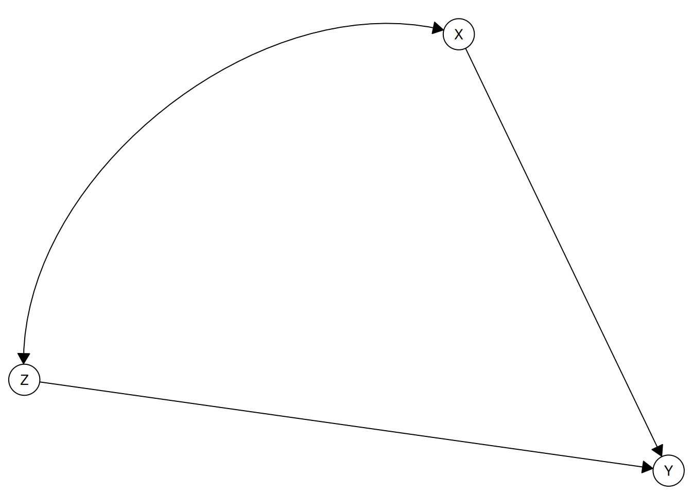
If a straight edge would pass too close to a non-incident node, it is automatically bent around that node with a Bezier curve. Edges with nothing in the way are always drawn straight.
detour <- cgraph("A --> X + Y, X --> Y")
cgraph_plot(detour, layout = list(A = c(0, 0), X = c(1, 0), Y = c(2, 0)))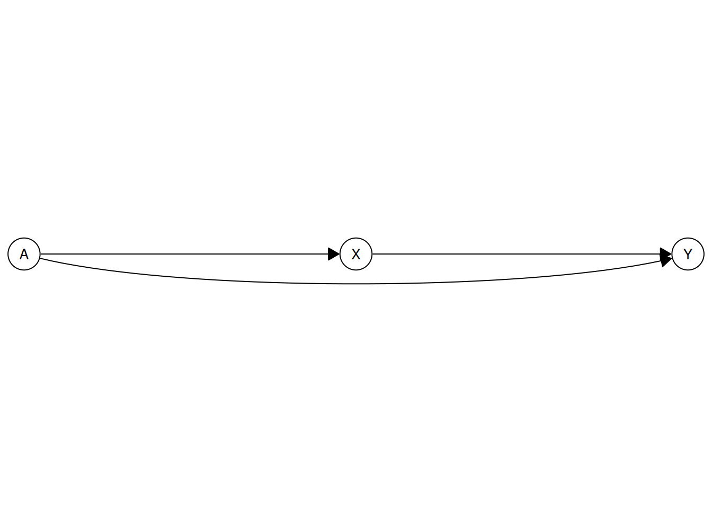
If you want to disable this automatic routing for a particular edge, you can set its curvature to 0:
cgraph_plot(detour, layout = list(A = c(0, 0), X = c(1, 0), Y = c(2, 0))) |>
style_edges(curvature = 0, from = "A", to = "Y")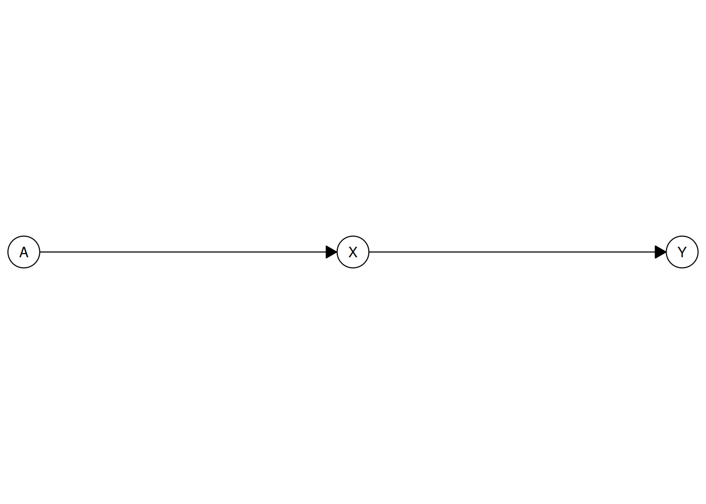
Explicit edge paths
Edges are normally drawn as straight lines unless automatic routing is needed. If you want to control the path yourself, you can set path and provide intermediate points for the edge, in the coordinates of the layout. For example, the edge K --> Y below is drawn through the point (0.5, -0.25):
positions <- cgraph_layout(dag, method = "stress")
cgraph_plot(dag, layout = positions) |>
style_edges(path = c(0.5, -0.25), from = "K", to = "Y")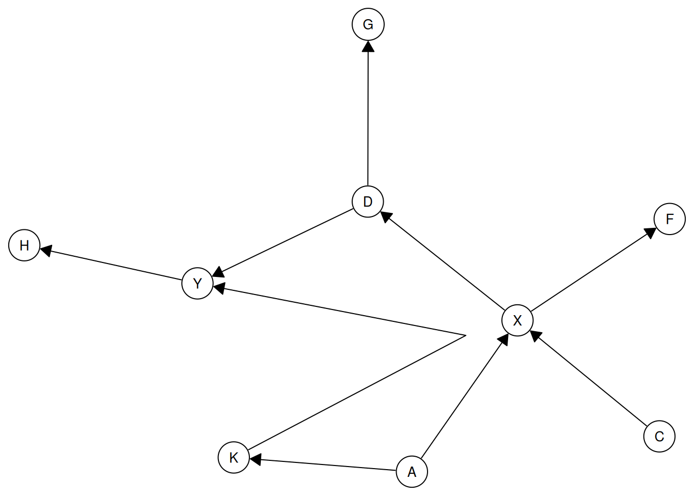
For several points, path can also be a two-column matrix, a data.frame with x and y columns, or a list of c(x, y) points, listed from the node in from to the node in to.
Labels and titles
Labels
By default, each node is labelled with its own name. If you want different labels, you can set them with label_nodes(). Node sizing takes multi-line labels into account, so the nodes grow to fit:
cgraph("A0 --> L1 --> A1 --> Y, A0 --> Y + A1") |>
label_nodes(
A0 = "Treatment\nat baseline",
L1 = "Confounder\nat time 1",
A1 = "Treatment\nat time 1"
)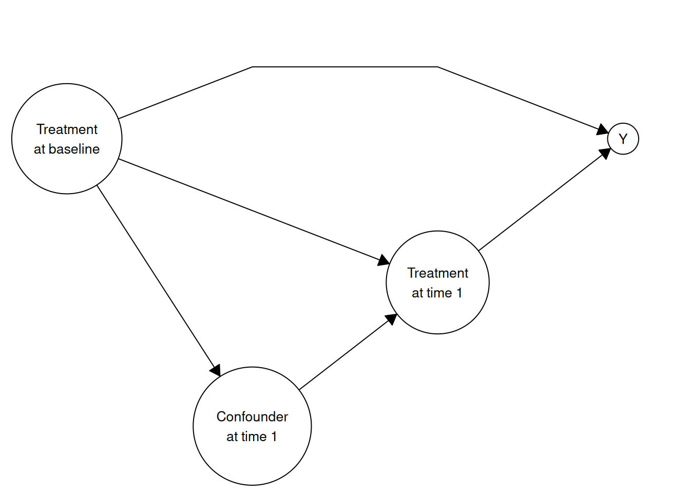
style_labels() styles the label text of the nodes in nodes:
| Field | Default | Controls |
|---|---|---|
col |
"black" |
text color |
fontsize |
10 |
font size |
fontface |
"plain" |
font face |
fontfamily |
"" |
font family |
cgraph_plot(dag) |>
style_labels(fontsize = 13) |>
style_labels(col = "#DC143C", nodes = "A")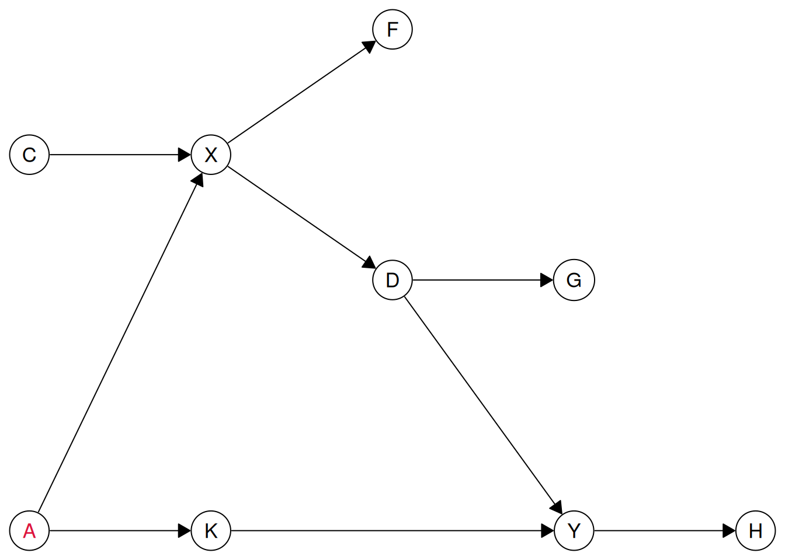
Edge labels
Edge labels are set with style_edges(), so they select edges in the same way as edge styling.
| Field | Default | Controls |
|---|---|---|
label |
NULL |
text drawn along the edge |
label_col |
"black" |
edge label text color |
label_fontsize |
9 |
edge label font size |
label_fontface |
"plain" |
edge label font face |
label_fontfamily |
"" |
edge label font family |
label_shift |
0.5 |
position along the edge, 0 (first node) to 1 (second node) |
label_distance |
NULL |
perpendicular gap (mm) from the edge; NULL scales with label_fontsize
|
label_rotation |
NULL |
text angle in degrees; NULL follows the edge’s own angle |
Let’s add a label to the edge K --> Y:
dag |> style_edges(label = "hello", from = "K", to = "Y")By default, the label follows the edge’s angle. You can use label_shift and label_distance to move it along or away from the edge:
cgraph_plot(dag) |>
style_edges(label_shift = 0.75, label_distance = 4) |>
style_edges(label = "hi", from = "K", to = "Y")
If an edge is steep or curved, following its angle can make the label hard to read. You can use label_rotation to give it a fixed angle instead:
cgraph_plot(dag) |>
style_edges(
label = "steep",
label_rotation = 0,
label_distance = 6,
label_col = "#DC143C",
from = "A",
to = "X"
) |>
style_edges(label = "follows", from = "K", to = "Y")
Titles
If you want to add a title, set main, and style it with style_title(), which takes the same fields as style_labels():
| Argument / field | Default | Controls |
|---|---|---|
main |
NULL |
plot title; NULL means no title |
fontsize |
14 |
title font size |
col |
"black" |
title color |
fontface |
"bold" |
title font face |
title_gap |
grid::unit(1, "lines") |
gap between the title and the graph |
cgraph_plot(dag, main = "My DAG") |>
style_title(fontsize = 20, col = "navy")
Figure size and margins
| Argument | Default | Controls |
|---|---|---|
outer_margin |
grid::unit(2, "mm") |
padding around the whole plot |
asp |
NA |
y/x aspect ratio of the layout; NA fills the available space |
A plot is drawn into whatever graphics device is open, so the figure size is set the usual R way, e.g. with grDevices::png(width =, height =) or a chunk’s fig-width/fig-height. Let’s make the figure a bit larger:
cgraph_plot(dag)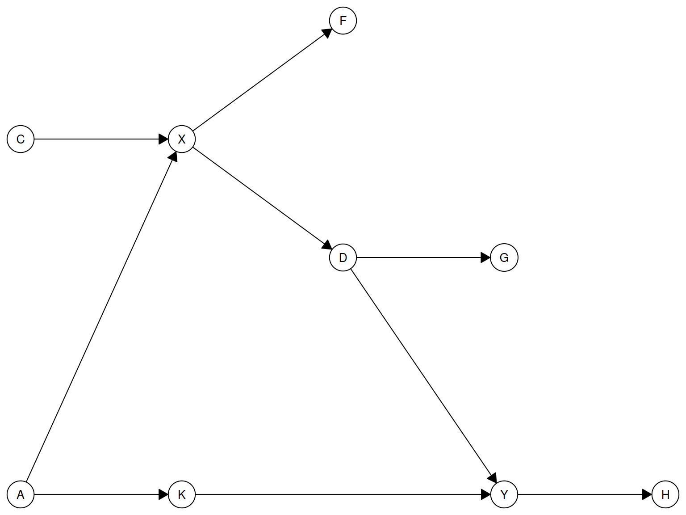
TipLarge graphs need a bigger figure
The default figure size works well for small examples. As your graph gets larger, labels and edges can become cramped or overlap. Increase the figure size (and, if needed, the node radius or the label fontsize) to keep larger graphs readable.
TipUneven figure sizes and
asp
By default, node positions are stretched to fill the figure, which can distort the layout’s own proportions in an uneven figure. If you want to keep them instead, set asp = 1.
Several plots in one figure
Plots combine with | (side by side) and / (stacked). Let’s draw the DAG and the ADMG side by side:
cgraph_plot(dag, main = "DAG") |
style_nodes(cgraph_plot(admg, main = "ADMG"), fill = "salmon")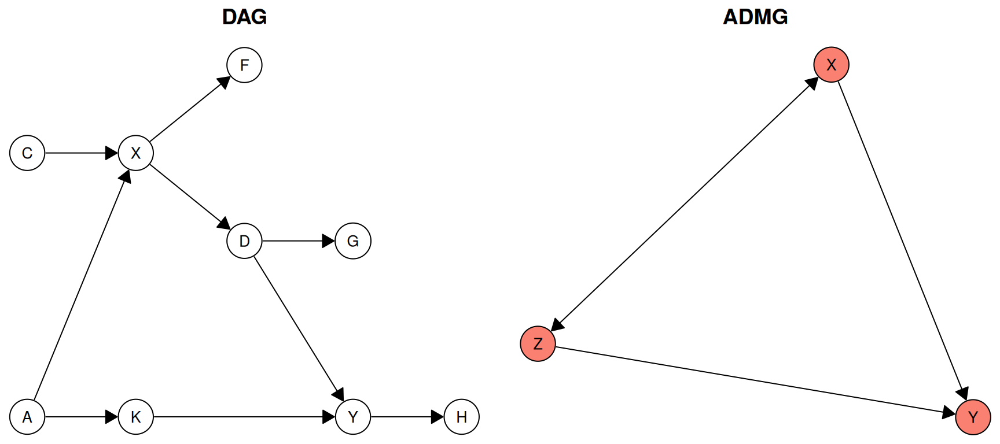
A chain of one operator gives equal panels (p1 | p2 | p3), and the two nest: (p1 | p2) / p3 puts two plots above a third. Style each plot before combining it, since the style verbs act on a single graph.
For more plots, or a list of them, cgraph_plot_grid() arranges them in rows and columns, with optional relative widths and heights:
dags <- lapply(1:6, function(i) generate_graph(5, p = 0.4, seed = i))
cgraph_plot_grid(lapply(dags, cgraph_plot), ncol = 3)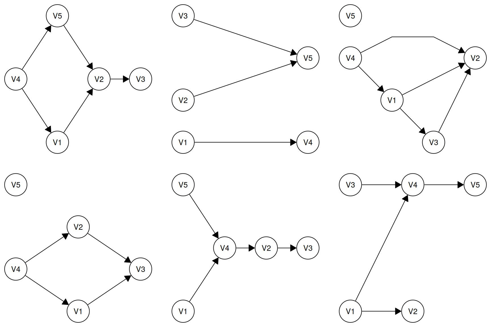
The gap between plots is plot_options("spacing"), or the spacing argument of cgraph_plot_grid().
Into an existing figure
A plot (or an arrangement) printed with newpage = FALSE is drawn into the current grid viewport instead of a new page, e.g. as one panel of a larger grid figure. cgraph_grob() gives its grid grob, which also lets you combine it with ggplot2 plots through patchwork:
patchwork::wrap_elements(full = cgraph_grob(cgraph_plot(dag))) + my_ggplotCombining options
Here we combine some of the styling above to plot a PAG:
pag <- cgraph(
"C o-> X, D --> G + Y, X --> D + F, Y --> H, K o-> X, K --> Y",
class = "PAG"
)
cgraph_plot(pag, layout = "stress", main = "A cool PAG") |>
style_nodes(fill = "whitesmoke", col = "slategray") |>
style_nodes(fill = "skyblue", col = "royalblue", nodes = "X") |>
style_nodes(fill = "gold", col = "darkorange", nodes = "Y") |>
style_nodes(shape = "square", linestyle = "dashed", nodes = "K") |>
style_edges(col = "darkslategray") |>
style_edges(col = "royalblue", lty = "dashed", type = c("o->", "<-o")) |>
style_edges(curvature = 0.3, from = "K", to = "Y") |>
style_edges(label = "cool", from = "K", to = "X") |>
style_labels(col = "navy", nodes = "X") |>
style_labels(col = "saddlebrown", nodes = "Y") |>
style_title(fontsize = 18, col = "navy")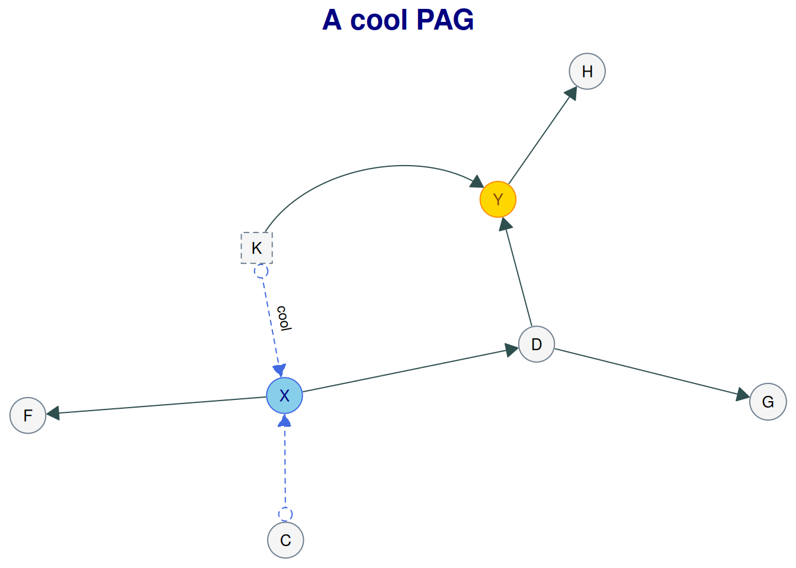
Footnotes
The compiled library uses a fork of NetworkLayout.jl, since the released version does not compile with
juliac --trim=safe.↩︎plot_options()presets for common conventions are also welcome as PRs!↩︎